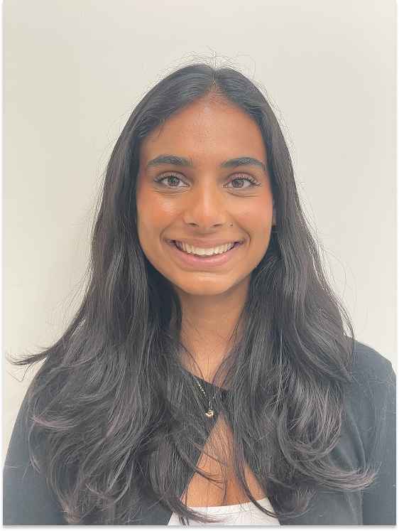
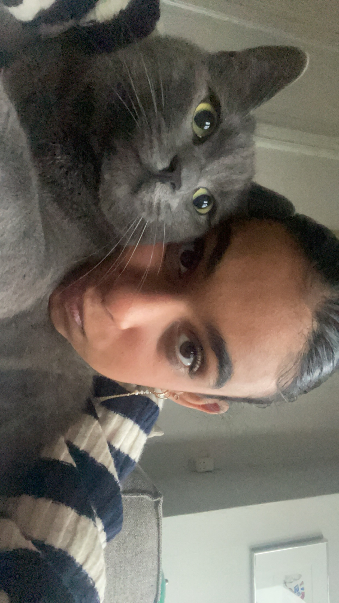

Mit navn er Cecilie og jeg er 21 år gammel og bor lige nu både hos min mor i Hellerup, og hos min far på Frederiksberg sammen med min lillesøster. Jeg har en kat som hedder Alfred, og han er super cute, jeg elsker ham.
Jeg har valgt Multimediedesigneruddannelsen, fordi jeg gerne vil arbejde med kreativitet og digitale værktøjer/medier, og lære at skabe professionelle brugeroplevelser både visuelt og teknisk. Uddannelsen lød super spændende, da den sammensætter mange af de ting, jeg interesserer mig for.
Jeg har altid syntes, det var sjovt at tage billeder, redigere og arbejde med sociale medier. Jeg synes, det er fascinerende, hvordan man kan kombinere design, kommunikation og teknologi for at skabe digitale løsninger. Selvom jeg endnu ikke har så meget erfaring med programmering eller design, er jeg meget nysgerrig og motiveret for at lære det.
 - Instagram: @cilledg
- Facebook: Cecilie Gregart
- Telefon: 30226560
- Ekmail: cegr0001@stud.ek.dk
- Jeg har svømmet med havskildpadder.
- Jeg har været på safari i Kenya.